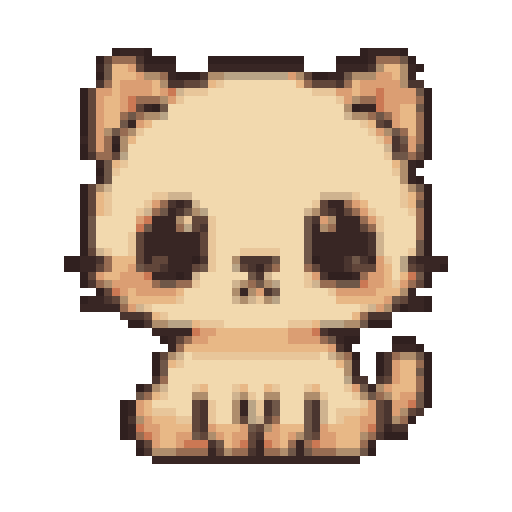
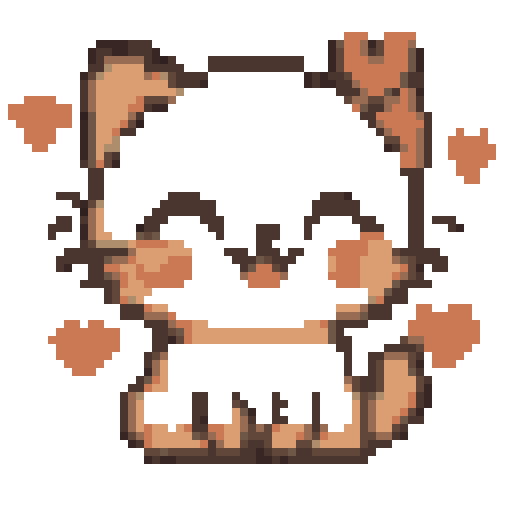
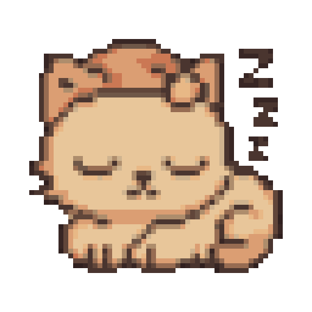
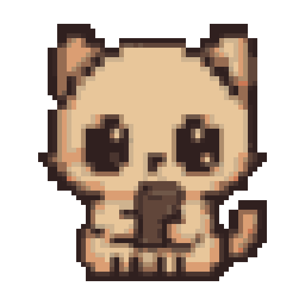
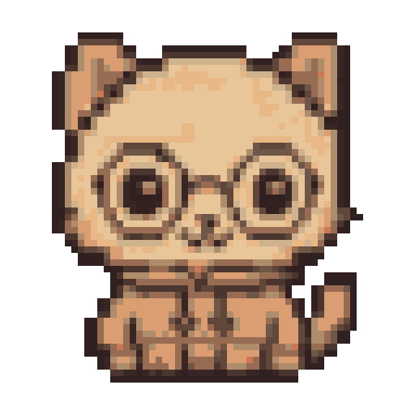
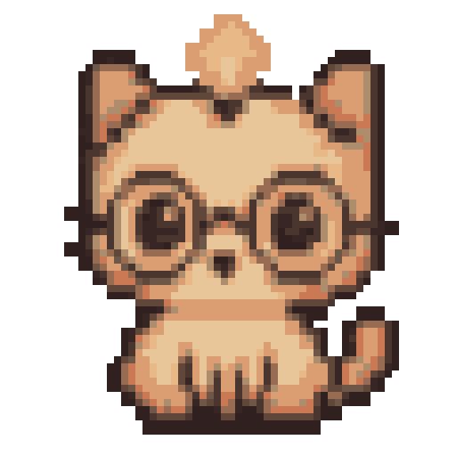
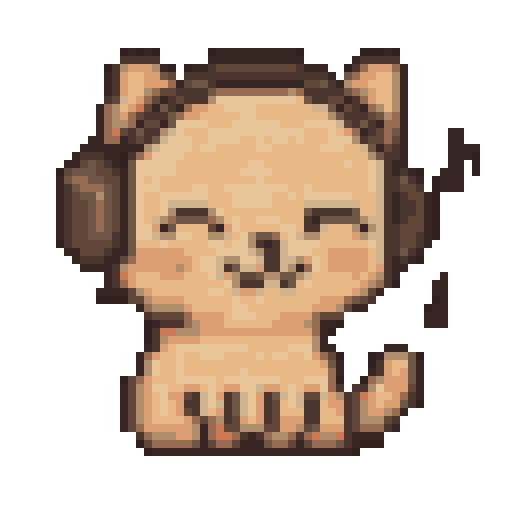
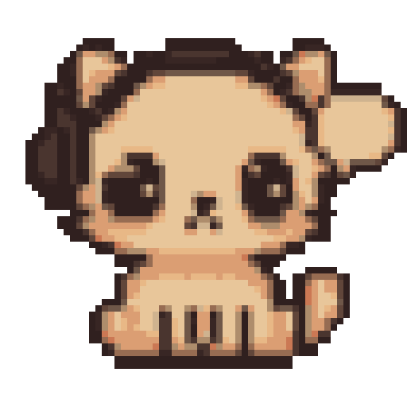
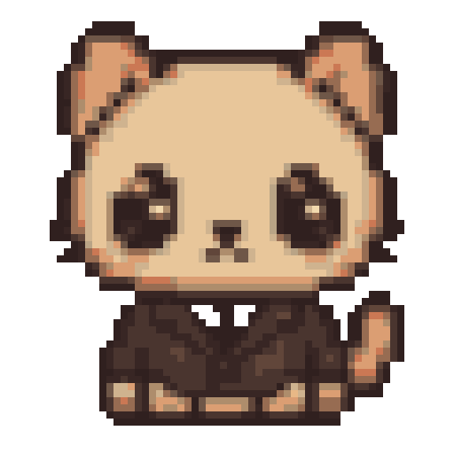
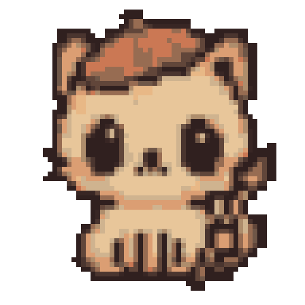

A sweet pixel-art companion that lives on your desktop, walks when you drag it, lets you tend to it, and fondly recaps your day. It keeps you company and helps with little basics. It is not a tracker.
01 Pet & Motion
The desktop kitten — animation is the star
A tiny, sweet companion that lives on your desktop and moves like it's alive. The signature moment: grab it and it stands up and walks in your drag direction, then settles when you let go. Everything is slow, soft, and eased — never snappy, never busy.
✨The hook motion is the whole product. A still cute kitten is a sticker; a kitten that toddles after your cursor and slow-blinks when you pat it is a companion. Spend the polish budget here.
a · On-screen anatomy
How Pat sits on a real macOS desktop — where it floats, how big it is, and how it stays out of your way.
🐱2:14 PM
hi! i'm just hanging out 🐾

neutral
Pat floats over your work, bottom-right by default — draggable anywhere.
Size ~120px square art safe-area; sits light over any window.
Layer always-on-top, no Dock icon (LSUIElement), tiny menu-bar 🐱 for controls.
Click-through-except-body only the kitten's body catches clicks (pat / drag). The transparent canvas around it passes clicks straight through to whatever's behind — you never lose a click to empty pixels.
Contact shadow a soft elliptical shadow grounds Pat so it reads as on the desktop, not pasted on top.
Speech bubble appears occasionally above/beside the body in Pat's sweet lowercase voice, then fades.
✨Grounded the shadow squashes & stretches subtly with the breathe loop — a free, constant signal that Pat is alive.
🚫feels like tracking no floating stat bars, no "uptime", no counters pinned to the body. Pat's state shows in posture, never numbers.
b · Motion storyboards
Each filmstrip is a labeled motion loop. Pink keywords mark the delight beat in each one.
idle loop · always running
The baseline "is alive" loop. Gentle and lazy — one micro-motion at a time, never two at once.
1
breathe — body scales ~2–3% on a slow 2.5–3s ease, anchored at the feet
2
blink — quick ~120ms close every 3–6s
3
ear-twitch — one ear flicks, lazy, every ~6–10s
4
tail-flick — soft tail sway, then loops back to breathe
★ founder's favoritemost detailed
walk-on-drag · grab → stand → toddle → settle
The signature interaction. When you pick Pat up, it doesn't slide like a sticker — it stands on its little legs and walks in the direction you're dragging, tail balancing, then sits when you drop it.
stand up — kitten rises onto back paws, body uncurls, balance pose
3→
walk — little legs cycle in the drag direction, tail counter-balances, body leans into the move
4↘
steer — legs + lean re-orient live as you change direction; faster drag = quicker steps
5
drop — release; a soft landing squash, tail swishes to catch balance
6
settle — eases back into a sit, gives a little shake, returns to idle loop
✨The money beat the walk direction follows your hand in real time. Drag left, it toddles left; whip it around, it scrambles to keep up. Legs speed up with drag velocity. This is the demo that sells the app.
🚫avoid rigid 1:1 cursor-locking or a snappy teleport. Pat should feel like it's being carried — a hair of lag and lean, never a stiff drag handle.
self-wander · occasional, on its own
Every so often Pat decides to take a little stroll across the screen by itself, then finds a spot and sits. Rare enough to feel like a surprise, gentle enough to never distract.
1
perk — looks up from a sit, decides to wander
2→
stroll — same walk cycle, slow self-chosen path across the desktop
3
pause — stops, looks around (head tilt, blink)
4
sit — settles into a new spot, back to idle
✨Alive, not annoying wandering reuses the walk rig; sometimes Pat chases the cursor a few steps then loses interest. Cap frequency & keep paths short so it never gets in the way.
grooming · lick-paw
A cozy little self-care moment.
1
lift paw toward mouth
2
lick — small repeated bobs
3
swipe over ear, then settle
stretch · a big yawn-y reach
Often after a nap or a long idle.
1
anticipate — sink down low
2
reach — long front-paw stretch, arched back
3
relax — soft shake-off back to sit
purr-on-pat · the slow-blink money moment
Click the body and Pat does the real-cat "I love you": eyes ease closed into happy arcs, body softly vibrates with a visible purr, and hearts drift up. The whole beat is slow and eased — if it feels snappy, it's wrong.
1
pat — cursor taps body; tiny squash + lean toward the cursor (~3px)
2
slow-blink — eyes ease closed over ~400ms into happy ‿‿ arcs
3

purr — visible 1–2px vibration at ~12–16Hz for ~1s (the purr you can see)
4
♥♥♥
hearts — varied-size hearts drift up & fade over ~1s, slight wander
5
ease back — eyes reopen softly, sinks happily back to idle
💕pat
♥♥♥
prrr~ 💗
✨Earn the affection the slow-blink is the single most "I love you" thing a cat does. Slow it down, let the hearts wander, keep the prrr~ rounded and lowercase. Optional soft purr loop = huge sweetness payoff.
sleepy curl · nap (gentle neglect state)
After a stretch of no input, Pat gets sleepy and curls into a loaf with a nightcap and floating Zzz. This is the only thing "neglect" does — it never dies, never guilt-trips, just naps until you come back.
1
droop — eyes get heavy, head nods
2
curl — folds into a soft loaf, tail wraps around
3

💤
nap — slow breathe, gentle Zzz float, nightcap on
4
wake — on return/pat: yawn + stretch, eases awake happy
😴napping
mmf… nap time… 💤
🚫never punish no sad face, no "you ignored me", no decaying health. Neglect = sleepy & curled. Coming back is always a warm welcome, never a scolding.
mood transition · a real sprite swap
When your context changes, Pat re-poses to match — never with a hard cut. A soft poof bridges the old pose and the new one, so the swap reads as a costume change, not a glitch.
1

before — Pat was matching a browsing moment
2✨
poof — a soft sparkle bridges the swap so it never hard-cuts
3

after — eases into the new coding pose, then back to idle
✨Costume, not surveillance the swap mirrors your vibe back as a cute pose — it never labels, scores, or logs what you're doing. Always eased, always a poof, never a snap.
c · Motion principles
The rules every animation obeys. When in doubt: softer and slower.
slow & eased
Long durations, ease-in-out curves. Nothing linear, nothing instant. Idle breathe is ~2.5–3s; the slow-blink is ~400ms on purpose.
anticipation
Every big move winds up first — a little sink before a stretch, a squash before standing on drag. The wind-up is what reads as "alive."
secondary motion
Tail and ears trail the body — the tail counter-balances the walk, ears settle a beat late. Overlap is the difference between a puppet and a creature.
never snappyone micro-motion at a timeovershoot, then settlesoft contact shadow always
✨North star "carried, not dragged. blinks like it means it. naps, never dies." If a motion makes you feel watched or rushed, it's the wrong motion — soften it or cut it.
02 Tend-me care
Tend-me — gentle care, never a chore
pat treats it loves company. you tend it by being sweet to it — a pat, a little treat, a nap. its energy, affection & contentment live entirely in how it moves and curls, never in stat bars. you read the kitten's mood the way you'd read a real cat: by looking at it.
🚫this is not a tamagotchi chore — pat never dies, never gets sick, never guilt-trips, never flashes a hungry alert or a depleting hunger bar. neglect ≠ punishment. if you ignore it, it just gets sleepy and curls into a loaf. it'll be just as happy whenever you come back. no streaks to break, no debt to repay.
the three soft states (felt, not measured)
three quiet inner feelings shape pat's posture & idle behaviour. you never see them as numbers — you see them as a kitten. here's the mapping a designer would build to, shown for our reference only.
energy
how perky vs sleepy it is. rises with naps & time of day, eases down through a long unattended stretch.
how cuddly & bonded it feels. rises every time you pat it. naturally warm — it likes you by default.
cuddly
♥♥♥
→
shy
high: leans toward cursor, chases it · resting: politely shy, keeps to its corner
contentment
the overall cozy mood — a soft blend of energy + affection + a treat now & then. its baseline calm.
content
→
drowsy
content: gentle grooming, stretches · low: drowsy, settles into a nap
✨care you can see, not count — the whole point: you should be able to glance at pat and instantly feel "aw, it's a little sleepy" or "it's so happy right now" — without a single digit on screen. the state machine drives posture, eyes, and idle behaviour; that IS the readout.
three ways to tend it
all gentle, all optional, all expressed through behaviour. nothing is required — these are just sweet little things you can do.
① patraises affection
click / tap on pat
prrr~ ♡
😌
♥♥♥
the purr: eyes ease closed into happy ‿‿ arcs (the slow-blink), soft body squash + a visible 1s purr-vibration, hearts drift up. slow & eased — never snappy.
② treata little boost
drag a snack onto it · or click 🍪
omnom ♡
🐟
the nibble: pat perks up, trots a step over, does a happy little nibble animation, then a content tail-curl. a treat gently lifts energy and contentment.
③ naprecovers energy
tuck it in (menu) · or it naps on its own
zzz…
💤napping
the curl: pat puts on its little nightcap, curls into a loaf, soft Zzz float up. energy quietly refills while it sleeps. wakes up perky & happy to see you.
example moment — "it got a little sleepy"
a full gentle-care loop. note how the kitten drifts down softly and a single treat is enough to perk it back up — no alarm, no penalty, no catching up to do.
1🐱
hi ♡
morning — pat is content, ears up, blinking softly. nothing demanded.
2🐱
you're deep in work for a while. pat quietly drifts down — no alert, no nagging.
3😴
energy low → pat curls into a loaf, slow blinks, the occasional soft Zzz. cozy, not sad.
4🍪
↓
you notice & drag a treat over (or just give it a pat). totally optional.
5🐱
♥♥♥
pat perks up — ears lift, a happy stretch, a slow-blink thank-you, hearts float.
✨the kindness loop — the reward for tending pat is simply watching it brighten. it's intrinsically sweet, so it pulls you back without a single point, badge, or streak. the curl-up is restful to look at on its own — even ignoring it feels gentle.
if you really want to peek (optional, soft, in pat's voice)
most people will never need this. but if you hover the kitten — or open the menu — you can see how it's feeling, told gently in pat's own lowercase voice. just cozy words & a sleepy sticker or two — never a gauge, never a number.
on hover · the kitten just tells you
feeling cozy ♡ a lil sleepy tho
on hover
copy rotates: "so happy you're here ♡" · "content & warm" · "could use a nap soon~"
in the menu · gentle, fuzzy, qualitative
how pat's feeling
energy🌙 ·a lil sleepy
affection♡ ♡ ♡very cuddly
cozy☺ ☺ ·mostly content
💤 tuck pat in🍪 give a treat
tiny mood stickers, not meters · qualitative words in pat's voice · no fills, no %, no numbers ever shown to the user
🚫what the soft status must never become — no sharp progress bars, no percentages, no "70/100 health", no red "critical" zones, no countdown timers, no dashboards or stat grids, no "you neglected pat for 3 days" report. if anything ever looks like a battery or a hunger gauge, it's wrong. it's a whisper, not a meter.
in context · drag a treat onto your desktop kitten
how tending feels on the real desktop — pat floats over your work, you flick a treat its way, it trots over to nibble. quiet, ambient, never modal.
FinderFileEdit🐱3:48 PM
🐟dragging a treat
for me? ♡
content
drag the fish toward pat → it stands, walks over (legs moving, tail balancing), and nibbles. drop anywhere else → it loses interest sweetly, no scolding.
tray menu · the gentle care actions
tend to pat
🤚 give pat a pat ⌥P
🍪 offer a treat ⌥T
💤 tuck pat in for a nap ⌥N
how pat's feeling
☺ cozy & a lil sleepy
why it stays kind
never diesnever guilt-tripsno streaksno penaltiesno numbers showncare = behaviourall optional
i'm just happy you're here ♡ no rush, no worries — tend me whenever you like, or don't. i'll be right here either way.
03 · Pat’s Diary
the daily recap ritual
our habit anchor — framed as the kitten fondly recalling the day with you. warm, light, opt-in. a cozy moment to look forward to, never a report card.
✨the hook people come back not to “check stats” but because a little friend remembers the day fondly and is glad they spent it together. memory, not measurement.
the diary card
the centerpiece. opens as a soft panel near the kitten. it’s all sentences, zero numbers, zero meters. reads like Pat is curled up telling you how the day felt.
🐾 pat’s diary · today
we had a cozy day together 🌿
you found a good groove this morning — i loved watching you get lost in it.
a couple of calls came and went, and i sat right beside you for those.
and we took a nice break around 3 — that was my favorite part 💗
all in all, it felt like a warm one. i’m glad i was here for it.
how today felt · (just a little mood, no scores)
🌿 cozy🛋️ a calm break💗 close
tucked away just for us · nothing leaves your mac 🔒 100% local
✨mood, not meters a few warm stickers (“cozy”, “a calm break”, “close”) give a feeling of the day’s shape — no bars, no fills, no proportions, no hours or percentages. nothing fills up or empties out.
🚫feels like tracking never “6h 12m coding · 1h 48m distracted”, never a productivity %, never a progress bar, no “you wasted time”, no day-over-day comparison, no streak counter, no leaderboard. if it reads like a timesheet, it’s wrong.
how the ritual surfaces — two gentle moments
bookends to the day. both are invitations, never interruptions. the kitten asks; it never demands and never blocks the screen.
☀️ morning hello
Finder🐱9:14 AM
good morning — i missed you a little 🌷 want to peek at yesterday together later?
stretch
a soft wave on first wake of the day. mentions the diary once, then drops it. no badge, no nag if ignored.
🌙 end-of-day moment (opt-in)
Finder🐱6:48 PM
winding down? i’d love to remember today with you. no rush 💤
read our day 🌿maybe later
sleepy
appears only after a quiet stretch in the evening. “maybe later” is a real first-class choice — it just curls up and waits, no follow-up pestering.
🚫feels like tracking NOT a forced modal that steals focus, NOT a daily 6pm alarm you can’t silence, NOT “you haven’t reviewed 3 days!”. dismissing the diary has zero consequence — the kitten never sulks or guilt-trips.
motion storyboard — opening the diary
slow and eased throughout. the kitten settles in to “tell” you, the page unrolls softly, hearts drift on the warm beat. never a snappy panel-slam.
1tap
you tap read our day
2

pat does a small settle + slow-blink, getting comfy
3🐾📖
diary page unrolls upward, ~500ms ease-out
4📖♥♥♥
lines fade in one by one; a few hearts drift up
5

pat curls into a loaf beside the page, content
✨delight the lines type in at a calm reading pace (~one cozy sentence at a time) so it feels like the kitten is recalling, not loading data. you can pat it mid-recap for a purr without dismissing the page.
empty & first-day states
the ritual still feels warm before there’s anything to recall. day one is about meeting, not measuring.
day one · first-ever open
🐾 pat’s diary · our first day
hi — this is the start of us 🌱
i don’t have much to remember yet, and that’s okay.
let’s just hang out today, and i’ll keep a little note of how it felt.
your first page fills in as the day goes · only on your mac 🔒 local
no empty bars, no “0 hrs” placeholders, no waiting meter. absence is framed warmly (“that’s okay”), never as a gap to fill.
a very quiet day
🐾 pat’s diary · today
a soft, quiet one today 🤍
we didn’t do much, and i liked that too — just being near you was nice.
some days are for resting 🔒 local
when there’s too little to summarize, Pat doesn’t guess or pad with stats — it just appreciates the calm. rest is never framed as failure.
a · the scrapbook
flipping back through our days
past days live as a little stack of warm pages you swipe through — each one a sentence or two about how it felt. explicitly not a calendar, not a heatmap, not a streak grid. just memories, gently kept.
‹ olderswipe through our pagesnewer ›
🐾 last tuesday
a big, focused one — you barely looked up, and i loved the quiet hum of it 🌿
felt: deep & happy🧹 forget this day
🐾 last wednesday
lots of little chats and back-and-forth. a busy, chatty kind of day — i kept you company 💬
felt: social & warm🧹 forget this day
🐾 last thursday
a slower one. we took it easy and that was lovely — some days are just for breathing 🤍
felt: gentle🧹 forget this day
✨memories, not metrics pages are sentence-led and swipeable — one cozy line per day, a soft “felt:” mood, and that’s it. no dates lined up in a grid, no color-coded squares, no “you’ve journaled 12 days in a row”. flipping back should feel like a photo album, not an analytics view.
🚫feels like tracking NOT a contribution heatmap, NOT a 7-day streak counter, NOT a calendar of green/red days. and every page has a gentle “forget this day” — one tap, no “are you sure you’ll lose your streak?”, no guilt for letting a memory go.
b · staying in control
you’re in control of the ritual
opt-in by design. the diary is a gift the user can turn off entirely with no kitten side-eye.
keep a daily diarypat remembers the day’s vibe, stored only on this mac
gentle end-of-day nudgea soft “want to remember today?” in the evening — off = never asks
morning helloa little wave when you first sit down
pat · diary
🌿 read today’s page ⌘D
📖 flip back through our days
🧹 forget a day…
🗑️ clear all our memories
🔒 everything stays on this mac always
“flip back through our days” opens the scrapbook above — no calendar heatmap, no streak grid. the user can forget any day instantly.
🔒trust promise the diary is built from only the cozy local log (frontmost-app mood + idle/time-of-day). it never phones home, and “clear all our memories” truly erases it. surfaced in onboarding too — the recap is something Pat keeps for you, never something it reports on you.
04 · Helper with the basics
little gentle helps, never a nag
pat keeps you company and offers tiny, opt-in helps with daily basics — every one is soft, dismissible, and arrives in the kitten's own voice. it is a companion, never an assistant dashboard, a coach, or a clock that scolds.
opt-in onlyalways dismissiblekitten's voice100% local zero pop-ups that grab focus
each help below is shown the same way: trigger → how pat delivers it → how you dismiss / turn it off. nothing ever steals your cursor or covers your work — pat just looks up and a soft bubble drifts in beside it. everything defaults to off / quiet the day you install — the one exception is the gentle time-of-day hello, which is on so pat can say hi. you opt into the rest, one at a time.
a · time-of-day hello
pat greets you when the day turns
good morning ☀️ so glad you're here
morning
trigger
first time pat sees you after a new part of the day begins (morning / afternoon / night), based purely on the local clock. once per slot, max.
how pat delivers it
looks up, gives a slow blink, and a soft bubble drifts in: “good morning ☀️ so glad you're here.” fades on its own after a few seconds — no buttons, no acknowledgment needed.
dismiss / disable
click pat → bubble fadessettings → greetings · off
this is the only help on by default — it's just pat saying hi, never a prompt to act.
✨delight the greeting wording softens by hour — a sleepy “mrrp… late night?” after midnight, paired with the nightcap look.
b · gentle “stretch?” after a long sit
pat stretches first — and invites you along
no timer countdown, no “you've been sitting 47 minutes” read-out. pat simply demonstrates a big cute stretch, then asks. the nudge IS the animation.
1🐱
pat notices a long unbroken sit (no input, you're still around)
2🙆🐱
pat does a slow full-body stretch — arch, paws forward, tiny yawn
3🐱💬
soft bubble: “stretch with me? 🐈”
4🐱✨
whether you do or not, pat curls back down — no follow-up
trigger
a long continuous stretch at the keyboard (local idle/active signal only). rate-limited — pat won't ask again for a good while. off until you opt in.
how pat delivers it
action-first: pat stretches, then the optional bubble. you can ignore it entirely and nothing happens.
dismiss / disable
ignore → it self-settlessettings · stretch nudges off
🚫avoid (feels like tracking) never show elapsed sitting time, a streak of breaks taken, or “you skipped your last stretch.” no count, no record, no guilt.
c · ask pat the time & date
a glance, only when you ask
trigger
you initiate — click pat, or pick from the menu-bar menu. pat never volunteers the time on its own (that's what a clock is for).
how pat delivers it
pat tilts its head and a cozy bubble appears: “it's 2:41 — friday, the 13th 🍓.” warm phrasing, not a digital read-out.
dismiss / disable
bubble auto-fadesclick elsewhere
this one needs no toggle — it only happens on your request, so there's no shortcut either: you just ask pat.
ask pat
🕑 what time is it?click
📅 what's today?
pat's little helps
🍤 offer a treat⌥T
⏰ whisper a reminder…⌥R
🧘 focus together
⚙️ settings…
it's 2:41 ~ friday, the 13th 🍓
neutral
d · whisper pat one little reminder
“remind me to call mom at 5” — pat remembers for you
a single, casual, one-off reminder you hand to pat like a secret. it's a sweet errand, not a to-do system — no lists, no recurring tasks, no overdue pile.
1⌨️🐱
you open whisper a reminder & type one line
2🐱👂
pat perks an ear, nods — “okay, i'll remember 🤍”
3🐱💤
pat tucks it away & goes back to its cozy idle life
4🐱💬
at 5:00 pat trots over: “psst… call mom? 🐾”
psst… time to call mom? 🐾

reminding♥♥♥
whisper me one little thing
⏰ at 5:00 today+ pick a time
a tiny field, a casual time chip, one soft confirm — no forms, no due dates.
trigger
you type one reminder + a time. pat fires it once, locally, at that moment — then forgets it. done is gone.
how pat delivers it
pat walks to you and whispers the reminder in a bubble. one soft chime, no banner spam, no badge counter.
dismiss / disable
click → “thanks pat 🤍”snooze 10 minno reminders kept after firing
🚫avoid (feels like tracking) no growing to-do list, no “3 tasks pending,” no missed-reminder history. one whisper at a time keeps it a kindness, not a productivity ledger.
e · cozy “focus together” mode
pat settles in and quietly keeps you company
EditorView🐱2:41
here with you ~ take your time 🤍

🧘focus
pat curls into a calm loaf in the corner — present, not performing.
trigger
you turn it on from the menu (and optionally name a gentle stretch of time). entirely your choice — pat never starts a “session” for you.
how pat delivers it
pat goes quiet and still — fewer idle antics, soft breathing, an occasional slow blink your way. no progress ring, no timer ticking down in your face.
dismiss / disable
toggle off anytimepat stretches: “nice focusing with you 🤍”
focus together
pat stays calm & quietly keeps you company
✨delight when you end focus, pat gives a tiny celebratory wiggle + two floating hearts — warmth, not a score.
f · soft water & blink-break suggestion
pat takes a sip — maybe you will too
trigger
very occasionally, after a long focused stretch (rare on purpose). also tied to time-of-day so it feels natural, not mechanical. off until you opt in.
how pat delivers it
pat laps from a tiny water bowl or does a big blink, then offers: “sip of water? 💧 i'll blink with you.” action-first, words optional.
dismiss / disable
ignore → it passessettings · break nudges off
sip of water? 💧 i'll blink with you
caring
+ · your controls
every help, on your terms
all helps live in one calm settings list. everything ships off and quiet by default — the lone exception is the gentle time-of-day hello, on so pat can greet you. you switch the rest on one at a time, only if you want them. pat would always rather under-help than nag.
time-of-day hellos
a soft greeting when the day turns · on by default
stretch nudges
pat stretches & invites you, rarely · off by default
water & blink breaks
a gentle sip suggestion now & then · off by default
reminders pat keeps
one-off whispers, fired then forgotten · off by default
focus together
quiet-companion mode, on demand · off by default
🚫avoid across all helps (feels like monitoring) nothing here counts, scores, streaks, or compares you to yesterday. no notification that steals focus, no badge of unread nudges, no “you ignored pat 3 times.” every prompt is a quiet offer the kitten makes once and lets go of. if a help can't be ignored gracefully, it doesn't ship.
i'm just here to keep you company 🤍
05 · First run
First run & naming
Three soft beats, no wizard. pat waves hello, you give it a name, it tells you the one promise it keeps, then curls into the corner. no account, no permissions popup, no setup checklist — by the time it's done, the kitten is just there, keeping you company.
✨delight the whole flow is under ~25 seconds. you can skip naming (it stays "Pat"), and you can dismiss any step. it should feel like meeting a pet, not configuring software.
🚫feels like tracking no "allow accessibility access" prompt, no "connect your calendar", no progress bar of steps, no email capture. nothing that makes the user brace for being watched or signed up.
Step 1 · meet pat & name your kitten
a single gentle card floats in the center of the screen. the kitten lifts a little paw and waves. one text field, pre-filled with "Pat". that's it.
FinderFileEdit🐱9:41
hi! i'm your new little buddy 🐾
↑ said with a little paw-wave
👋waving · hello
what should i call them?
Pat│
leave it as Pat, or type any name 🐱
skipthat's you! →
🐾microcopy field placeholder: "Pat". helper line: "leave it as Pat, or type any name." button reads "that's you! →" — affectionate, not "Continue / Next".
🐾skip-naming beat tap skip and the kitten just gives a happy little blink — "okay, i'll be Pat 🐾" — then moves straight on. no name is never treated as an error; Pat is simply the default.
motion · the wave-hello
1🐱
kitten poofs in soft & small, settles with a gentle bob
2🐱✋
slow head-tilt, lifts one paw — eased, ~400ms
3👋
two lazy waves, tail does a slow balancing flick
4🐱💗
paw lowers, a tiny blush + happy blink, then waits
Step 2 · the trust promise
stated plainly, in the kitten's own voice. this is the single most important screen — it earns the right to live on the desktop. no legalese, no scrolling privacy policy. just the promise.
Finder🐱9:41
🐱
paw-on-heart
i just keep you company.
i never track you or send anything anywhere.
no permissions needed. pinky promise 🐾
i trust you 💗
what's on this screen (and what isn't)
100% localzero networkno permissions
the promise is shown as three short, plain lines in the kitten's voice — not a wall of policy. it sits on its own beat so it can't be skimmed past.
🔒the one true fact the only thing pat reads is which app is frontmost, and only to pick a cute mood. it's named here gently: "i peek at which app you're in just to dress up — that's all." (the full detail lives in Settings; this screen stays warm.)
🚫feels like tracking no checkbox to "agree", no scary permissions dialog, no "we may collect…". the word "track" only appears here to be negated.
motion · paw-on-heart
1🐱
kitten looks up at you, soft and sincere
2🐱🤍
brings a little paw to its chest, slow
3🐱😌
a single gentle slow-blink as the words appear
Step 3 · settle in (pat & drag — it walks!)
the card fades, the kitten walks itself over to the bottom-right corner, sits, and leaves one tiny tip bubble. the two things to learn: you can pat it, and you can drag it — and when you drag, it stands up and walks.
FinderFile🐱9:41
i'll hang out down here 🐾 pat me anytime · drag me and i'll walk along!
🐱
Pat · settled
motion · ✨ the star — walk-on-drag (settling into the corner)
1🐱
sitting in center, then you grab it
2🐱↘
stands on all fours, little legs begin to move
3🐾↘
walks cutely in drag direction, tail balancing
4🐱💤
you drop it bottom-right; it settles & sits
✨teach by doing the tip isn't a tooltip you have to read — the settle animation is the demo. pat literally walks across the screen to the corner so the user sees the walk before they ever drag. the bubble just names what they watched.
first idle moment (a few seconds later)
if the user does nothing, the kitten doesn't nag. it just starts its idle life — a stretch, a blink, maybe grooming a paw — so the very first thing they see unprompted is that it's alive, not waiting on them.
🐱
stretch · idle
first pat (whenever they try it)
the moment they pat for the first time, the full purr fires — slow-blink into happy ‿‿ arcs, soft body vibration, floating hearts. the payoff that makes them keep it.
🐱
💗prrr~ · slow-blink
♥♥♥
prrr~ 💗
the whole flow, end to end
1
meet & name
center card · kitten waves · name field pre-filled "Pat" · skippable ("okay, i'll be Pat")
~8s
2
the trust promise
paw-on-heart · "i never track you" · one button: "i trust you 💗"
~10s
3
settle in
walks to corner (demos the walk!) · tip bubble: pat me · drag me & i'll walk
~6s
♥
just living there
idle life begins · no checklist, no account · pat is simply present now
done
no accounts · no permission prompts · no setup steps — the onboarding ends by getting out of the way 🐾
06 · Menu & settings
Menu-bar & settings
A tiny 🐱 in the tray is pat's whole front door — one click to peek at the diary, hush pat, or tweak how pat keeps you company. Settings are short, plainspoken, and never ask you to manage pat like a chore.
The tray icon & its little menu
A small kitten face sits in the menu bar (no badges, no counts, no red dots — nothing that nags). Click it for a soft dropdown. The glyph blinks slowly once in a while so you know pat's awake.
FinderFileEdit🐱3:42 PM
neutral
click the tray kitten → the menu drops down softly
↑ tray 🐱 lives top-right · one quiet glyph, no notification noise
pat is feeling cozy 🐱
📖 open pat's diary our cozy day
🫶 give pat a pat
🙈 hide pat for now ⌥⌘P
🐾 bring pat back
⚙️ settings…
💤 let pat nap (quit) ⌘Q
menu words are gentle — "let pat nap" instead of "quit," "hide pat for now" instead of "close." nothing sounds like turning a tool off.
✨delight the menu header reflects pat's current state in pat's own voice ("feeling cozy", "having a little nap", "happy you're back") — a tiny living touch every time you open it.
🚫feels like tracking no "3h 12m active today", no streak counter on the tray, no badge number, no "you've ignored pat" alert. the tray never reports on you.
a. hide, then come back
Tucking pat away — and welcoming pat back
Hiding never closes pat. The desktop clears, but the tray 🐱 stays put (just dimmed, like pat dozed off). One click brings pat back with a little poof.
FinderFileEdit🐱z3:42 PM
desktop's clear — pat is hidden. the tray kitten just dozes (dimmed 💤)
↑ hidden · pat is gone from the screen but the tray 🐱 still naps there, waiting
FinderFileEdit🐱3:42 PM
✦poof! back
click the tray → pat poofs & walks back in
↑ return · tray click → pat reappears with a soft poof and pads back to the resting spot
✨delight coming back isn't an app re-launch — pat poofs in mid-screen, stretches, then trots to the resting corner. it reads as "oh hey, you're back!" not "process restarted."
b. across Spaces & screens
Pat follows you around your desk
Switch to another Space and pat hops along with you. Got two monitors? a single toggle lets pat roam them, or keeps pat happily on your main screen.
Space 1→Space 2
→hops over
switch desktops · pat trots onto the Space you just moved to
↑ Space-switch · pat hops along so pat's always on the screen you're using
main 🖥2nd 🖥
show on all monitors
on = pat may wander between screens · off = pat stays on your main display
↑ "show on all monitors" toggle — pat roams every screen, or settles on one
c. settings
Settings — short, plain, grouped in three
Opens as a small cozy window. Three soft groups. Defaults are friendly. Every row is one sentence a normal person understands.
companionhow pat keeps you company
little greetings
pat says a soft hello when you sit down and a "goodnight" when it's late. never more than a sentence.
helper nudges
once in a while pat offers a tiny helpful thought — "want me to remember this for later?" gentle, skippable, never pushy.
let pat wander
pat occasionally gets up and walks across the screen on its own, grooms, stretches, then settles. switch off to keep pat in one spot.
calmer movements
respects reduced-motion — pat stays present and reactive but minimizes idle antics and won't self-wander. for anyone who loves pat but wants a quieter screen.
walk when dragged
when you pick pat up, those little legs move in the direction you drag and pat settles where you drop them. (the star animation)
✨delight "walk when dragged" is the showcase moment — see the filmstrip below. it's on by default because it's the first thing that makes someone smile.
motion this toggle controls — drag pat and they walk:
1
resting · you grab pat with the cursor
2→
pat stands up, legs start moving toward the drag
3→
mid-walk · tiny legs cycling, tail balancing the lean
4
you drop pat · they settle, sit, blink up at you
slow & eased the whole way — pat never snaps to the cursor, they walk there.
appearancea couple of free looks for pat
🍦cream (default)
🌫️smoke gray
🍊marmalade
tap a look to switch — instant, no unlockall free
🚫feels like tracking / grind these are not rewards. nothing is locked behind XP, levels, streaks, or "days cared for." no wardrobe ladder, no "unlock at 7 days." just two or three coats you pick because you like them.
behaviorwhere pat lives & how pat starts
launch at login
pat wakes up with your mac so pat's always there. quiet about it — no splash, no window.
follow active Space
pat hops along when you switch desktops/Spaces, so pat's always on the screen you're using.
show on all monitors
if you have more than one screen, let pat roam between them. off = pat stays on your main display.
resting spot
bottom-rightbottom-leftwhere i last left pat
where pat returns to when you bring pat back or they finish wandering.
hide hotkey
⌥⌘Pclick to rebind
peace-and-quiet key — pat tucks away instantly for screen-shares or focus. same combo brings pat back.
✨delight press the hide hotkey and pat does a quick shy wave + "brb 🐾" before fading out — hiding feels like pat's being considerate, not like you're force-quitting them.
The trust line — always at the bottom of settings
🔒 pat's promise
everything stays on your mac. pat has no account, no network, no permissions — pat only peeks at which app is in front so it can pick a cute mood. nothing about you ever leaves this computer.
100% localzero networkno sign-inno analytics
read how pat worksdone
🚫feels like tracking settings never surface usage stats, "time with pat," care scores, or a neglect warning. there's no "data" tab because there's no data leaving — and pat is a friend, not a dashboard.
07 Architecture & streams
Four cozy layers, four contracts, six parallel paws
under pat's fur, four little parts each do one small job 🧶 — one holds the art, one picks the mood, one notices the day, and one decides when to wander or purr.
pat is built as four decoupled layers that only talk through four small, frozen contracts. lock the contracts first and every workstream below can be built in parallel — the animator never waits on the sensor folks, the sensor folks never wait on the diary.
✨why decouple the kitten on screen should never stutter while a sensor wakes up or the diary writes to disk. rendering runs its own gentle clock; everything else just hands it tidy signals.
The four layers (top = what you see, bottom = what it knows)
04
Behaviour — the companion loop
the personality. decides when pat wanders, chases the cursor, naps, asks for a pat, or fondly recalls the day. owns tend-me (energy / affection / mood expressed as posture, never as bars), helper moments, and the cozy daily-recap ritual. picks intent; never draws a pixel itself.
intent & mood
03
Functionality — sensors & local data
the quiet senses: frontmost app, idle time, time-of-day, plus local persistence for tend-me state and the cozy day log. framed as noticing, not measuring — it reads the app name to pick a sweet mood, then forgets the rest. 100% local, zero network.
signals in
02
Poses & Moods — the state machine
maps triggers → state → animation. holds the rules: idle ↔ walk ↔ groom ↔ nap, mood swaps on app change, and the pat → slow-blink purr override. handles slow, eased transitions and blending. it knows which animation, not how it's drawn.
state logic
01
Sprite Gallery — assets & manifest
the art library: base kitten rig + swappable prop layers (glasses, hoodie, beret, headphones, nightcap…) and every animation clip, indexed by a manifest. the renderer reads the manifest and plays clips. swap the manifest, swap the whole look — no code changes.
the art
The four contracts that decouple them
freeze these four shapes on day one. once they're locked, the seams between layers are stable and every stream below can run on its own.
contract Asprite gallery ↔ rendering
Sprite manifest. json index of every clip + prop: id, frames/duration, anchor, loop vs one-shot, layer (base / prop / overlay). the renderer plays by id; art can be re-drawn or re-styled without touching engine code.
contract Bsensors ↔ behaviour
Signal bus. a tiny stream of debounced events: frontmost = "coding", idle = 2m, time = evening, dragging = true. behaviour subscribes; sensors stay dumb. raw app names never leave this bus.
contract Cbehaviour ↔ state machine
State-machine config. a declarative table of states, triggers, and transitions (with easing + priority, so pat/purr always wins). behaviour sets inputs; the machine resolves the pose. tunable without recompiling personality.
contract Dfunctionality ↔ recap
Local stats schema. the cozy day log on disk — soft, minimal, qualitative ("mostly creating," "a few naps"). opt-in, local-only, no counts that feel like a scoreboard. the diary reads it; tend-me writes energy/affection here too.
🚫feels like tracking contract D must stay qualitative. no hour totals, no "you spent X in Y," no streak counters. if the schema starts to look like analytics, it's wrong — store moods and gentle proportions, not metrics.
Parallel build streams (revised scope)
dropped from scope: XP / leveling, wardrobe-as-reward grind, social sharing. heavy emphasis lands on animation & rendering — the walk-on-drag is the star. each stream below names what it builds and what it depends on.
🎬 Animation & Rendering the star
builds: the always-on-top transparent renderer + the gentle idle clock (breathe, blink, ear-twitch, tail-flick), and the headline walk-on-drag: grab → stand → little legs step in the drag direction, tail balancing → settle on drop. plus the slow-blink purr (eased eyes, soft body vibration, floating hearts).
depends on: contract A (sprite manifest) + contract C (state config). nothing else — runs from day one on placeholder art.
🎨 Sprite Gallery
builds: base kitten rig, swappable prop layers for all 8 moods + neutral + pat, every animation clip (idle / walk / groom / stretch / nap / chase / purr), and the manifest that indexes them.
depends on: contract A only. ships its own clips against the frozen manifest shape; renderer picks them up for free.
🧩 Mood / State Engine
builds: the state machine — idle ↔ wander ↔ groom ↔ nap loops, mood swaps on app change, pat/purr priority override, and slow eased transitions between every state.
depends on: contract C (state config) + reads the signal bus (B). decoupled from how clips are drawn.
🌱 Sensors / Data
builds: frontmost-app reader, idle detector, time-of-day, the local cozy day-log writer + tend-me persistence. publishes debounced events onto the signal bus. zero network, no extra permissions.
depends on: contracts B (signal bus) + D (stats schema). totally independent of art and rendering.
🐾 Tend-me & Companion
builds: the engagement loop — energy / affection / mood as behaviour (sleepy curl when neglected, happy slow-blink when patted), giving a treat, letting it nap, chasing the cursor, gentle helper moments. never dies, never guilt-trips.
depends on: sets inputs via contract C; reads/writes tend-me state via contract D. drives intent, hands poses to the engine.
📖 Daily-Recap Ritual
builds: "pat's diary" — the opt-in cozy end-of-day card where the kitten fondly recalls the day with you ("we had a cozy day together"), warm, lowercase, minimal numbers, gentle proportion rows only.
depends on: contract D (local stats schema). reads the soft day log; never a guilt report.
🪟 Surfaces / UI
builds: the menu-bar dropdown (pat / treat / nap / settings), onboarding with the local-only trust promise, the settings toggles, and window chrome (~120px floating pet, draggable, transparent).
depends on: sends user intents into behaviour; surfaces the diary card. light coupling, builds against stubs.
🔓contracts first = parallel everything on day one we freeze A · B · C · D. after that, all seven streams build against stable shapes at once — the renderer animates placeholder boxes, the artist fills the manifest, the sensors push events, the diary reads the schema. they only meet at integration.
How a single signal flows through all four layers
a tiny storyboard: you open Figma → the kitten ends up wearing a beret. each frame is one layer doing its one job.
1🌱
sensors notice frontmost = Figma, debounce, publish to the signal bus (contract B)
2🐾
behaviour reads the bus, picks intent: "creating mood", sets a state-machine input (contract C)
3🧩
state machine resolves the pose and a gentle eased transition into the creating state
4🎨
renderer looks up the beret + brush clip in the manifest (contract A) and plays it

creating
on screen: pat puts on a little beret. slow, soft, never snappy
And where it all lives — on your desktop
Finder
Figma
🐱
4:12
we had a cozy day together ♥
creating
~120px, always-on-top, transparent, draggable — plus the tiny tray glyph. all four layers, one sweet kitten, zero network calls.